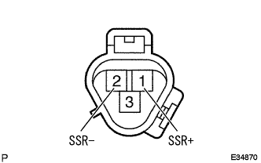
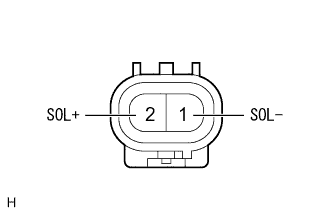
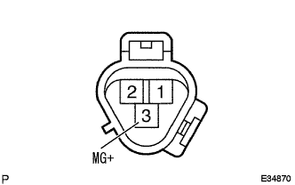

Cooler Compressor Assembly (Engine Type 2GR-FE) Inspection |
| 1. Cooler Compressor w/ Magnetic Clutch Assembly Inspection |
Lock Sensor Resistance Inspection
 |
Using SST (Toyota electrical tester), measure the resistance between terminals 1 (SSR+) and 2 (SSR-) of the connector.
Solenoid Resistance Inspection
 |
Using SST (Toyota electrical tester), inspect the resistance between terminals 2 (SOL+) and 1 (SOL-) of the connector.
Magnetic Clutch Operation Inspection
 |
Check that when the battery positive is connected to terminal 3 (MG+) of the connector and the battery negative is connected to the ground wire, an operating sound is heard and the magnetic clutch hub and rotor lock.